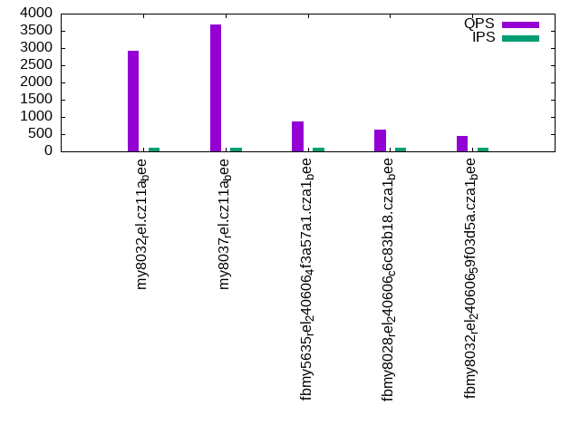

Introduction
This is a report for the insert benchmark with 800M docs and 1 client(s). It is generated by scripts (bash, awk, sed) and Tufte might not be impressed. An overview of the insert benchmark is here and a short update is here. Below, by DBMS, I mean DBMS+version.config. An example is my8020.c10b40 where my means MySQL, 8020 is version 8.0.20 and c10b40 is the name for the configuration file.
The test server has 8 AMD cores, 16G RAM and an NVMe SSD. It is described here as the Beelink. The benchmark was run with 1 client and there were 1 or 3 connections per client (1 for queries or inserts without rate limits, 1+1 for rate limited inserts+deletes). It uses 1 table. It loads 20M rows per table without secondary indexes, creates 3 secondary indexes per table, then inserts 40m+10m rows per table with a delete per insert to avoid growing the table. It then does 6 read+write tests for 1800s each that do queries as fast as possible with 100,100,500,500,1000,1000 inserts/s and the same for deletes/s per client concurrent with the queries. The database is cached in memory. Clients and the DBMS share one server. The per-database configs are in the per-database subdirectories here.
The tested DBMS are:
- my8032_rel.cz11a_bee - MySQL 8.0.32 with the cz11a_bee config
- my8037_rel.cz11a_bee - MySQL 8.0.37 with the cz11a_bee config
- fbmy5635_rel_240606_4f3a57a1.cza1_bee - MyRocks 5.6.35 with the cza1_bee config compiled at git sha 4f3a57a1 on 240606 using RocksDB 8.7.0
- fbmy8028_rel_240606_c6c83b18.cza1_bee - MyRocks 8.0.28 with the cza1_bee config compiled at git sha c6c83b18 on 240606 using RocksDB 8.7.0
- fbmy8032_rel_240606_59f03d5a.cza1_bee - MyRocks 8.0.36 with the cza1_bee config compiled at git sha 59f03d5a on 240606 using RocksDB 9.3.1
Contents
- Summary
- l.i0: load without secondary indexes
- l.x: create secondary indexes
- l.i1: continue load after secondary indexes created with 50 inserts per transaction
- l.i2: continue load after secondary indexes created with 5 inserts per transaction
- qr100.L1: range queries with 100 insert/s per client
- qp100.L2: point queries with 100 insert/s per client
- qr500.L3: range queries with 500 insert/s per client
- qp500.L4: point queries with 500 insert/s per client
- qr1000.L5: range queries with 1000 insert/s per client
- qp1000.L6: point queries with 1000 insert/s per client
Summary
The numbers are inserts/s for l.i0, l.i1 and l.i2, indexed docs (or rows) /s for l.x and queries/s for qr100, qp100 thru qr1000, qp1000" The values are the average rate over the entire test for inserts (IPS) and queries (QPS). The range of values for IPS and QPS is split into 3 parts: bottom 25%, middle 50%, top 25%. Values in the bottom 25% have a red background, values in the top 25% have a green background and values in the middle have no color. A gray background is used for values that can be ignored because the DBMS did not sustain the target insert rate. Red backgrounds are not used when the minimum value is within 80% of the max value.
| dbms | l.i0 | l.x | l.i1 | l.i2 | qr100 | qp100 | qr500 | qp500 | qr1000 | qp1000 |
|---|---|---|---|---|---|---|---|---|---|---|
| my8032_rel.cz11a_bee | 54956 | 105848 | 3528 | 1061 | 2928 | 612 | 3102 | 562 | 3212 | 522 |
| my8037_rel.cz11a_bee | 54021 | 106724 | 3559 | 1076 | 3697 | 618 | 3808 | 567 | 3943 | 526 |
| fbmy5635_rel_240606_4f3a57a1.cza1_bee | 78301 | 80808 | 14001 | 4474 | 867 | 819 | 1494 | 796 | 825 | 791 |
| fbmy8028_rel_240606_c6c83b18.cza1_bee | 57021 | 72886 | 12304 | 4372 | 622 | 713 | 540 | 706 | 592 | 702 |
| fbmy8032_rel_240606_59f03d5a.cza1_bee | 53544 | 71736 | 18026 | 5777 | 457 | 748 | 980 | 736 | 808 | 726 |
This table has relative throughput, throughput for the DBMS relative to the DBMS in the first line, using the absolute throughput from the previous table. Values less than 0.95 have a yellow background. Values greater than 1.05 have a blue background.
| dbms | l.i0 | l.x | l.i1 | l.i2 | qr100 | qp100 | qr500 | qp500 | qr1000 | qp1000 |
|---|---|---|---|---|---|---|---|---|---|---|
| my8032_rel.cz11a_bee | 1.00 | 1.00 | 1.00 | 1.00 | 1.00 | 1.00 | 1.00 | 1.00 | 1.00 | 1.00 |
| my8037_rel.cz11a_bee | 0.98 | 1.01 | 1.01 | 1.01 | 1.26 | 1.01 | 1.23 | 1.01 | 1.23 | 1.01 |
| fbmy5635_rel_240606_4f3a57a1.cza1_bee | 1.42 | 0.76 | 3.97 | 4.22 | 0.30 | 1.34 | 0.48 | 1.42 | 0.26 | 1.52 |
| fbmy8028_rel_240606_c6c83b18.cza1_bee | 1.04 | 0.69 | 3.49 | 4.12 | 0.21 | 1.17 | 0.17 | 1.26 | 0.18 | 1.34 |
| fbmy8032_rel_240606_59f03d5a.cza1_bee | 0.97 | 0.68 | 5.11 | 5.44 | 0.16 | 1.22 | 0.32 | 1.31 | 0.25 | 1.39 |
This lists the average rate of inserts/s for the tests that do inserts concurrent with queries. For such tests the query rate is listed in the table above. The read+write tests are setup so that the insert rate should match the target rate every second. Cells that are not at least 95% of the target have a red background to indicate a failure to satisfy the target.
| dbms | qr100.L1 | qp100.L2 | qr500.L3 | qp500.L4 | qr1000.L5 | qp1000.L6 |
|---|---|---|---|---|---|---|
| my8032_rel.cz11a_bee | 100 | 100 | 499 | 499 | 999 | 998 |
| my8037_rel.cz11a_bee | 100 | 100 | 499 | 499 | 998 | 998 |
| fbmy5635_rel_240606_4f3a57a1.cza1_bee | 100 | 100 | 499 | 499 | 998 | 998 |
| fbmy8028_rel_240606_c6c83b18.cza1_bee | 100 | 100 | 499 | 499 | 998 | 998 |
| fbmy8032_rel_240606_59f03d5a.cza1_bee | 100 | 100 | 499 | 499 | 998 | 998 |
| target | 100 | 100 | 500 | 500 | 1000 | 1000 |
l.i0
l.i0: load without secondary indexes. Graphs for performance per 1-second interval are here.
Average throughput:
Insert response time histogram: each cell has the percentage of responses that take <= the time in the header and max is the max response time in seconds. For the max column values in the top 25% of the range have a red background and in the bottom 25% of the range have a green background. The red background is not used when the min value is within 80% of the max value.
| dbms | 256us | 1ms | 4ms | 16ms | 64ms | 256ms | 1s | 4s | 16s | gt | max |
|---|---|---|---|---|---|---|---|---|---|---|---|
| my8032_rel.cz11a_bee | 99.400 | 0.458 | 0.142 | 0.001 | 0.104 | ||||||
| my8037_rel.cz11a_bee | 99.411 | 0.446 | 0.142 | 0.001 | nonzero | 0.401 | |||||
| fbmy5635_rel_240606_4f3a57a1.cza1_bee | 99.869 | 0.127 | 0.002 | 0.002 | 0.227 | ||||||
| fbmy8028_rel_240606_c6c83b18.cza1_bee | 99.722 | 0.201 | 0.074 | 0.004 | 0.116 | ||||||
| fbmy8032_rel_240606_59f03d5a.cza1_bee | 99.710 | 0.209 | 0.078 | 0.003 | 0.091 |
Performance metrics for the DBMS listed above. Some are normalized by throughput, others are not. Legend for results is here.
ips qps rps rmbps wps wmbps rpq rkbpq wpi wkbpi csps cpups cspq cpupq dbgb1 dbgb2 rss maxop p50 p99 tag 54956 0 0 0.0 338.0 20.9 0.000 0.000 0.006 0.389 6869 20.9 0.125 30 52.4 68.0 11.1 0.104 55037 51440 my8032_rel.cz11a_bee 54021 0 0 0.0 329.2 20.4 0.000 0.000 0.006 0.388 6480 20.4 0.120 30 52.4 68.0 11.1 0.401 54040 50543 my8037_rel.cz11a_bee 78301 0 0 0.0 43.1 13.9 0.000 0.000 0.001 0.182 7721 23.1 0.099 24 23.0 23.6 1.5 0.227 78510 71518 fbmy5635_rel_240606_4f3a57a1.cza1_bee 57021 0 0 0.0 44.9 13.0 0.000 0.000 0.001 0.233 5998 22.9 0.105 32 23.0 23.8 2.0 0.116 57135 50544 fbmy8028_rel_240606_c6c83b18.cza1_bee 53544 0 0 0.0 42.7 12.2 0.000 0.000 0.001 0.233 5844 22.3 0.109 33 23.0 23.8 2.0 0.091 53538 48447 fbmy8032_rel_240606_59f03d5a.cza1_bee
l.x
l.x: create secondary indexes.
Average throughput:

Performance metrics for the DBMS listed above. Some are normalized by throughput, others are not. Legend for results is here.
ips qps rps rmbps wps wmbps rpq rkbpq wpi wkbpi csps cpups cspq cpupq dbgb1 dbgb2 rss maxop p50 p99 tag 105848 0 1776 168.4 2203.0 151.4 0.017 1.629 0.021 1.464 8770 44.1 0.083 33 120.7 136.3 11.2 0.004 NA NA my8032_rel.cz11a_bee 106724 0 1790 169.7 2177.8 152.7 0.017 1.628 0.020 1.465 8627 43.7 0.081 33 120.7 136.3 11.2 0.004 NA NA my8037_rel.cz11a_bee 80808 0 107 16.6 35.4 12.6 0.001 0.210 0.000 0.159 265 11.7 0.003 12 51.0 51.6 8.8 0.002 NA NA fbmy5635_rel_240606_4f3a57a1.cza1_bee 72886 0 96 14.9 31.4 11.1 0.001 0.210 0.000 0.156 389 11.7 0.005 13 50.9 51.7 10.3 0.003 NA NA fbmy8028_rel_240606_c6c83b18.cza1_bee 71736 0 95 14.7 30.8 10.9 0.001 0.210 0.000 0.156 604 11.7 0.008 13 50.9 51.7 10.4 0.004 NA NA fbmy8032_rel_240606_59f03d5a.cza1_bee
l.i1
l.i1: continue load after secondary indexes created with 50 inserts per transaction. Graphs for performance per 1-second interval are here.
Average throughput:
Insert response time histogram: each cell has the percentage of responses that take <= the time in the header and max is the max response time in seconds. For the max column values in the top 25% of the range have a red background and in the bottom 25% of the range have a green background. The red background is not used when the min value is within 80% of the max value.
| dbms | 256us | 1ms | 4ms | 16ms | 64ms | 256ms | 1s | 4s | 16s | gt | max |
|---|---|---|---|---|---|---|---|---|---|---|---|
| my8032_rel.cz11a_bee | 0.009 | 83.883 | 15.230 | 0.875 | 0.003 | 0.403 | |||||
| my8037_rel.cz11a_bee | 0.011 | 84.186 | 14.908 | 0.888 | 0.006 | 0.433 | |||||
| fbmy5635_rel_240606_4f3a57a1.cza1_bee | 99.759 | 0.236 | 0.005 | 0.001 | 0.070 | ||||||
| fbmy8028_rel_240606_c6c83b18.cza1_bee | 99.606 | 0.384 | 0.009 | 0.001 | 0.084 | ||||||
| fbmy8032_rel_240606_59f03d5a.cza1_bee | 99.553 | 0.438 | 0.009 | nonzero | 0.084 |
Delete response time histogram: each cell has the percentage of responses that take <= the time in the header and max is the max response time in seconds. For the max column values in the top 25% of the range have a red background and in the bottom 25% of the range have a green background. The red background is not used when the min value is within 80% of the max value.
| dbms | 256us | 1ms | 4ms | 16ms | 64ms | 256ms | 1s | 4s | 16s | gt | max |
|---|---|---|---|---|---|---|---|---|---|---|---|
| my8032_rel.cz11a_bee | 4.174 | 92.279 | 3.252 | 0.292 | 0.003 | 0.403 | |||||
| my8037_rel.cz11a_bee | 4.915 | 91.544 | 3.207 | 0.329 | 0.005 | 0.431 | |||||
| fbmy5635_rel_240606_4f3a57a1.cza1_bee | 99.430 | 0.559 | 0.010 | 0.001 | 0.129 | ||||||
| fbmy8028_rel_240606_c6c83b18.cza1_bee | 99.472 | 0.513 | 0.013 | 0.002 | 0.087 | ||||||
| fbmy8032_rel_240606_59f03d5a.cza1_bee | 99.237 | 0.747 | 0.016 | 0.001 | 0.068 |
Performance metrics for the DBMS listed above. Some are normalized by throughput, others are not. Legend for results is here.
ips qps rps rmbps wps wmbps rpq rkbpq wpi wkbpi csps cpups cspq cpupq dbgb1 dbgb2 rss maxop p50 p99 tag 3528 0 7783 121.6 11868.1 316.0 2.206 35.297 3.364 91.710 72207 33.1 20.467 751 167.1 186.7 10.8 0.403 3848 0 my8032_rel.cz11a_bee 3559 0 7870 123.0 11985.4 319.3 2.211 35.379 3.367 91.863 71691 33.4 20.142 751 167.0 186.5 10.8 0.433 3899 0 my8037_rel.cz11a_bee 14001 0 2380 15.7 111.0 41.1 0.170 1.150 0.008 3.009 10972 41.7 0.784 238 55.2 56.7 8.0 0.070 16690 0 fbmy5635_rel_240606_4f3a57a1.cza1_bee 12304 0 2018 13.2 102.3 36.7 0.164 1.099 0.008 3.057 9760 40.4 0.793 263 55.3 56.9 8.0 0.084 14983 0 fbmy8028_rel_240606_c6c83b18.cza1_bee 18026 0 3522 22.0 167.0 60.9 0.195 1.249 0.009 3.461 15262 58.3 0.847 259 62.1 63.8 8.1 0.084 19429 5931 fbmy8032_rel_240606_59f03d5a.cza1_bee
l.i2
l.i2: continue load after secondary indexes created with 5 inserts per transaction. Graphs for performance per 1-second interval are here.
Average throughput:
Insert response time histogram: each cell has the percentage of responses that take <= the time in the header and max is the max response time in seconds. For the max column values in the top 25% of the range have a red background and in the bottom 25% of the range have a green background. The red background is not used when the min value is within 80% of the max value.
| dbms | 256us | 1ms | 4ms | 16ms | 64ms | 256ms | 1s | 4s | 16s | gt | max |
|---|---|---|---|---|---|---|---|---|---|---|---|
| my8032_rel.cz11a_bee | 5.135 | 68.452 | 23.720 | 2.683 | 0.011 | 0.187 | |||||
| my8037_rel.cz11a_bee | 5.667 | 68.304 | 23.367 | 2.649 | 0.012 | nonzero | 0.562 | ||||
| fbmy5635_rel_240606_4f3a57a1.cza1_bee | 0.021 | 99.863 | 0.054 | 0.061 | 0.001 | nonzero | 0.080 | ||||
| fbmy8028_rel_240606_c6c83b18.cza1_bee | 99.796 | 0.110 | 0.093 | 0.001 | nonzero | 0.083 | |||||
| fbmy8032_rel_240606_59f03d5a.cza1_bee | 99.644 | 0.256 | 0.098 | 0.002 | nonzero | 0.070 |
Delete response time histogram: each cell has the percentage of responses that take <= the time in the header and max is the max response time in seconds. For the max column values in the top 25% of the range have a red background and in the bottom 25% of the range have a green background. The red background is not used when the min value is within 80% of the max value.
| dbms | 256us | 1ms | 4ms | 16ms | 64ms | 256ms | 1s | 4s | 16s | gt | max |
|---|---|---|---|---|---|---|---|---|---|---|---|
| my8032_rel.cz11a_bee | 21.040 | 56.500 | 21.203 | 1.252 | 0.005 | 0.197 | |||||
| my8037_rel.cz11a_bee | 23.909 | 53.972 | 20.894 | 1.219 | 0.006 | nonzero | 0.418 | ||||
| fbmy5635_rel_240606_4f3a57a1.cza1_bee | 99.591 | 0.282 | 0.126 | 0.001 | nonzero | 0.080 | |||||
| fbmy8028_rel_240606_c6c83b18.cza1_bee | 98.405 | 1.436 | 0.158 | 0.002 | nonzero | 0.067 | |||||
| fbmy8032_rel_240606_59f03d5a.cza1_bee | 98.006 | 1.849 | 0.143 | 0.003 | nonzero | 0.080 |
Performance metrics for the DBMS listed above. Some are normalized by throughput, others are not. Legend for results is here.
ips qps rps rmbps wps wmbps rpq rkbpq wpi wkbpi csps cpups cspq cpupq dbgb1 dbgb2 rss maxop p50 p99 tag 1061 0 12876 201.2 17318.1 439.5 12.139 194.231 16.327 424.299 87266 37.5 82.272 2828 167.1 186.7 10.8 0.187 564 0 my8032_rel.cz11a_bee 1076 0 12990 203.0 17462.5 443.5 12.073 193.174 16.231 422.091 86625 38.1 80.514 2833 167.0 186.5 10.8 0.562 564 0 my8037_rel.cz11a_bee 4474 0 1467 10.0 63.6 23.3 0.328 2.286 0.014 5.342 22101 32.9 4.940 588 56.4 56.7 7.6 0.080 4998 20 fbmy5635_rel_240606_4f3a57a1.cza1_bee 4372 0 1613 10.7 63.6 23.2 0.369 2.501 0.015 5.433 22021 34.6 5.036 633 55.3 55.7 8.0 0.083 4998 0 fbmy8028_rel_240606_c6c83b18.cza1_bee 5777 0 1988 13.7 99.4 35.9 0.344 2.434 0.017 6.368 28782 43.6 4.982 604 55.1 55.5 8.0 0.070 5779 3966 fbmy8032_rel_240606_59f03d5a.cza1_bee
qr100.L1
qr100.L1: range queries with 100 insert/s per client. Graphs for performance per 1-second interval are here.
Average throughput:
Query response time histogram: each cell has the percentage of responses that take <= the time in the header and max is the max response time in seconds. For max values in the top 25% of the range have a red background and in the bottom 25% of the range have a green background. The red background is not used when the min value is within 80% of the max value.
| dbms | 256us | 1ms | 4ms | 16ms | 64ms | 256ms | 1s | 4s | 16s | gt | max |
|---|---|---|---|---|---|---|---|---|---|---|---|
| my8032_rel.cz11a_bee | 17.750 | 81.875 | 0.356 | 0.018 | 0.001 | 0.041 | |||||
| my8037_rel.cz11a_bee | 60.339 | 39.572 | 0.086 | 0.002 | nonzero | 0.060 | |||||
| fbmy5635_rel_240606_4f3a57a1.cza1_bee | 7.410 | 72.945 | 8.099 | 11.545 | 0.002 | nonzero | 0.179 | ||||
| fbmy8028_rel_240606_c6c83b18.cza1_bee | 0.515 | 65.942 | 20.199 | 13.343 | 0.002 | 0.060 | |||||
| fbmy8032_rel_240606_59f03d5a.cza1_bee | 1.022 | 65.236 | 6.714 | 27.027 | 0.001 | 0.063 |
Insert response time histogram: each cell has the percentage of responses that take <= the time in the header and max is the max response time in seconds. For max values in the top 25% of the range have a red background and in the bottom 25% of the range have a green background. The red background is not used when the min value is within 80% of the max value.
| dbms | 256us | 1ms | 4ms | 16ms | 64ms | 256ms | 1s | 4s | 16s | gt | max |
|---|---|---|---|---|---|---|---|---|---|---|---|
| my8032_rel.cz11a_bee | 61.583 | 37.333 | 1.083 | 0.132 | |||||||
| my8037_rel.cz11a_bee | 68.028 | 31.778 | 0.194 | 0.094 | |||||||
| fbmy5635_rel_240606_4f3a57a1.cza1_bee | 99.111 | 0.861 | 0.028 | 0.017 | |||||||
| fbmy8028_rel_240606_c6c83b18.cza1_bee | 98.833 | 1.111 | 0.056 | 0.018 | |||||||
| fbmy8032_rel_240606_59f03d5a.cza1_bee | 95.194 | 4.778 | 0.028 | 0.018 |
Delete response time histogram: each cell has the percentage of responses that take <= the time in the header and max is the max response time in seconds. For max values in the top 25% of the range have a red background and in the bottom 25% of the range have a green background. The red background is not used when the min value is within 80% of the max value.
| dbms | 256us | 1ms | 4ms | 16ms | 64ms | 256ms | 1s | 4s | 16s | gt | max |
|---|---|---|---|---|---|---|---|---|---|---|---|
| my8032_rel.cz11a_bee | 81.833 | 17.611 | 0.556 | 0.047 | |||||||
| my8037_rel.cz11a_bee | 83.111 | 16.889 | 0.013 | ||||||||
| fbmy5635_rel_240606_4f3a57a1.cza1_bee | 82.111 | 13.611 | 4.278 | 0.018 | |||||||
| fbmy8028_rel_240606_c6c83b18.cza1_bee | 90.417 | 8.944 | 0.639 | 0.022 | |||||||
| fbmy8032_rel_240606_59f03d5a.cza1_bee | 87.417 | 11.750 | 0.833 | 0.018 |
Performance metrics for the DBMS listed above. Some are normalized by throughput, others are not. Legend for results is here.
ips qps rps rmbps wps wmbps rpq rkbpq wpi wkbpi csps cpups cspq cpupq dbgb1 dbgb2 rss maxop p50 p99 tag 100 2928 2272 35.5 3068.1 77.7 0.776 12.414 30.743 796.804 31479 16.5 10.750 451 167.1 186.7 10.7 0.041 2956 1486 my8032_rel.cz11a_bee 100 3697 2179 34.1 3033.2 76.8 0.590 9.432 30.393 787.879 34042 17.1 9.208 370 167.0 186.5 10.8 0.060 3692 2605 my8037_rel.cz11a_bee 100 867 510 3.3 12.1 3.5 0.588 3.901 0.121 35.415 4490 14.9 5.179 1375 54.9 55.0 7.9 0.179 688 527 fbmy5635_rel_240606_4f3a57a1.cza1_bee 100 622 16 0.2 5.1 0.7 0.025 0.380 0.051 7.471 2728 12.5 4.388 1608 55.0 55.3 8.1 0.060 623 527 fbmy8028_rel_240606_c6c83b18.cza1_bee 100 457 14 0.2 5.0 0.7 0.031 0.482 0.050 6.769 2262 12.1 4.950 2118 55.1 55.3 8.5 0.063 463 384 fbmy8032_rel_240606_59f03d5a.cza1_bee
qp100.L2
qp100.L2: point queries with 100 insert/s per client. Graphs for performance per 1-second interval are here.
Average throughput:
Query response time histogram: each cell has the percentage of responses that take <= the time in the header and max is the max response time in seconds. For max values in the top 25% of the range have a red background and in the bottom 25% of the range have a green background. The red background is not used when the min value is within 80% of the max value.
| dbms | 256us | 1ms | 4ms | 16ms | 64ms | 256ms | 1s | 4s | 16s | gt | max |
|---|---|---|---|---|---|---|---|---|---|---|---|
| my8032_rel.cz11a_bee | 0.106 | 99.714 | 0.179 | 0.001 | 0.041 | ||||||
| my8037_rel.cz11a_bee | 0.133 | 99.691 | 0.175 | 0.001 | 0.041 | ||||||
| fbmy5635_rel_240606_4f3a57a1.cza1_bee | 14.178 | 85.765 | 0.056 | 0.001 | 0.043 | ||||||
| fbmy8028_rel_240606_c6c83b18.cza1_bee | 2.306 | 97.627 | 0.067 | 0.001 | 0.025 | ||||||
| fbmy8032_rel_240606_59f03d5a.cza1_bee | 3.770 | 96.157 | 0.073 | nonzero | 0.027 |
Insert response time histogram: each cell has the percentage of responses that take <= the time in the header and max is the max response time in seconds. For max values in the top 25% of the range have a red background and in the bottom 25% of the range have a green background. The red background is not used when the min value is within 80% of the max value.
| dbms | 256us | 1ms | 4ms | 16ms | 64ms | 256ms | 1s | 4s | 16s | gt | max |
|---|---|---|---|---|---|---|---|---|---|---|---|
| my8032_rel.cz11a_bee | 90.361 | 9.639 | 0.026 | ||||||||
| my8037_rel.cz11a_bee | 90.306 | 9.694 | 0.029 | ||||||||
| fbmy5635_rel_240606_4f3a57a1.cza1_bee | 98.722 | 1.250 | 0.028 | 0.319 | |||||||
| fbmy8028_rel_240606_c6c83b18.cza1_bee | 98.139 | 1.861 | 0.015 | ||||||||
| fbmy8032_rel_240606_59f03d5a.cza1_bee | 99.222 | 0.778 | 0.012 |
Delete response time histogram: each cell has the percentage of responses that take <= the time in the header and max is the max response time in seconds. For max values in the top 25% of the range have a red background and in the bottom 25% of the range have a green background. The red background is not used when the min value is within 80% of the max value.
| dbms | 256us | 1ms | 4ms | 16ms | 64ms | 256ms | 1s | 4s | 16s | gt | max |
|---|---|---|---|---|---|---|---|---|---|---|---|
| my8032_rel.cz11a_bee | 98.167 | 1.806 | 0.028 | 0.022 | |||||||
| my8037_rel.cz11a_bee | 98.472 | 1.500 | 0.028 | 0.018 | |||||||
| fbmy5635_rel_240606_4f3a57a1.cza1_bee | 98.306 | 1.639 | 0.028 | 0.028 | 0.320 | ||||||
| fbmy8028_rel_240606_c6c83b18.cza1_bee | 98.528 | 1.472 | 0.015 | ||||||||
| fbmy8032_rel_240606_59f03d5a.cza1_bee | 98.722 | 1.278 | 0.012 |
Performance metrics for the DBMS listed above. Some are normalized by throughput, others are not. Legend for results is here.
ips qps rps rmbps wps wmbps rpq rkbpq wpi wkbpi csps cpups cspq cpupq dbgb1 dbgb2 rss maxop p50 p99 tag 100 612 5957 93.1 954.6 24.1 9.732 155.714 9.565 247.471 18001 5.7 29.408 745 167.1 186.7 10.7 0.041 623 559 my8032_rel.cz11a_bee 100 618 6004 93.8 952.6 24.1 9.707 155.306 9.545 247.035 18352 5.8 29.671 750 167.0 186.5 10.8 0.041 623 575 my8037_rel.cz11a_bee 100 819 6720 51.6 4.9 0.6 8.205 64.513 0.049 6.053 17168 7.3 20.962 713 55.0 55.0 9.1 0.043 815 640 fbmy5635_rel_240606_4f3a57a1.cza1_bee 100 713 5913 45.6 5.7 0.9 8.289 65.390 0.057 8.806 15363 7.1 21.535 796 55.0 55.3 9.3 0.025 719 559 fbmy8028_rel_240606_c6c83b18.cza1_bee 100 748 6748 50.9 13.8 3.6 9.027 69.670 0.139 37.413 17495 10.8 23.401 1156 54.9 55.1 9.5 0.027 751 655 fbmy8032_rel_240606_59f03d5a.cza1_bee
qr500.L3
qr500.L3: range queries with 500 insert/s per client. Graphs for performance per 1-second interval are here.
Average throughput:
Query response time histogram: each cell has the percentage of responses that take <= the time in the header and max is the max response time in seconds. For max values in the top 25% of the range have a red background and in the bottom 25% of the range have a green background. The red background is not used when the min value is within 80% of the max value.
| dbms | 256us | 1ms | 4ms | 16ms | 64ms | 256ms | 1s | 4s | 16s | gt | max |
|---|---|---|---|---|---|---|---|---|---|---|---|
| my8032_rel.cz11a_bee | 27.064 | 72.696 | 0.220 | 0.020 | 0.011 | ||||||
| my8037_rel.cz11a_bee | 62.251 | 37.740 | 0.008 | 0.001 | 0.014 | ||||||
| fbmy5635_rel_240606_4f3a57a1.cza1_bee | 6.149 | 75.567 | 17.359 | 0.923 | 0.001 | nonzero | 0.204 | ||||
| fbmy8028_rel_240606_c6c83b18.cza1_bee | 0.193 | 66.338 | 17.601 | 15.864 | 0.004 | nonzero | 0.155 | ||||
| fbmy8032_rel_240606_59f03d5a.cza1_bee | 2.279 | 79.813 | 11.214 | 6.693 | 0.001 | nonzero | 0.129 |
Insert response time histogram: each cell has the percentage of responses that take <= the time in the header and max is the max response time in seconds. For max values in the top 25% of the range have a red background and in the bottom 25% of the range have a green background. The red background is not used when the min value is within 80% of the max value.
| dbms | 256us | 1ms | 4ms | 16ms | 64ms | 256ms | 1s | 4s | 16s | gt | max |
|---|---|---|---|---|---|---|---|---|---|---|---|
| my8032_rel.cz11a_bee | 91.228 | 8.772 | 0.047 | ||||||||
| my8037_rel.cz11a_bee | 90.239 | 9.756 | 0.006 | 0.305 | |||||||
| fbmy5635_rel_240606_4f3a57a1.cza1_bee | 98.750 | 1.244 | 0.006 | 0.020 | |||||||
| fbmy8028_rel_240606_c6c83b18.cza1_bee | 97.456 | 2.489 | 0.056 | 0.018 | |||||||
| fbmy8032_rel_240606_59f03d5a.cza1_bee | 98.978 | 0.956 | 0.067 | 0.023 |
Delete response time histogram: each cell has the percentage of responses that take <= the time in the header and max is the max response time in seconds. For max values in the top 25% of the range have a red background and in the bottom 25% of the range have a green background. The red background is not used when the min value is within 80% of the max value.
| dbms | 256us | 1ms | 4ms | 16ms | 64ms | 256ms | 1s | 4s | 16s | gt | max |
|---|---|---|---|---|---|---|---|---|---|---|---|
| my8032_rel.cz11a_bee | 95.522 | 4.461 | 0.017 | 0.017 | |||||||
| my8037_rel.cz11a_bee | 97.028 | 2.956 | 0.011 | 0.006 | 0.279 | ||||||
| fbmy5635_rel_240606_4f3a57a1.cza1_bee | 97.217 | 2.728 | 0.056 | 0.039 | |||||||
| fbmy8028_rel_240606_c6c83b18.cza1_bee | 94.889 | 4.967 | 0.144 | 0.018 | |||||||
| fbmy8032_rel_240606_59f03d5a.cza1_bee | 97.117 | 2.756 | 0.128 | 0.028 |
Performance metrics for the DBMS listed above. Some are normalized by throughput, others are not. Legend for results is here.
ips qps rps rmbps wps wmbps rpq rkbpq wpi wkbpi csps cpups cspq cpupq dbgb1 dbgb2 rss maxop p50 p99 tag 499 3102 2595 40.5 3179.9 81.8 0.837 13.384 6.371 167.732 31117 17.4 10.030 449 167.1 186.7 10.7 0.011 3100 2046 my8032_rel.cz11a_bee 499 3808 2540 39.7 3172.7 81.6 0.667 10.676 6.361 167.452 33672 18.0 8.843 378 167.0 186.5 10.8 0.014 3788 3420 my8037_rel.cz11a_bee 499 1494 426 2.9 18.5 5.9 0.285 1.958 0.037 12.047 6877 15.9 4.602 851 55.0 55.3 7.9 0.204 1550 943 fbmy5635_rel_240606_4f3a57a1.cza1_bee 499 540 273 2.2 16.4 5.0 0.505 4.075 0.033 10.348 3107 15.6 5.750 2309 55.0 55.5 8.2 0.155 543 448 fbmy8028_rel_240606_c6c83b18.cza1_bee 499 980 172 1.3 16.2 4.5 0.175 1.323 0.032 9.287 4735 14.9 4.833 1217 55.0 55.5 8.1 0.129 975 800 fbmy8032_rel_240606_59f03d5a.cza1_bee
qp500.L4
qp500.L4: point queries with 500 insert/s per client. Graphs for performance per 1-second interval are here.
Average throughput:
Query response time histogram: each cell has the percentage of responses that take <= the time in the header and max is the max response time in seconds. For max values in the top 25% of the range have a red background and in the bottom 25% of the range have a green background. The red background is not used when the min value is within 80% of the max value.
| dbms | 256us | 1ms | 4ms | 16ms | 64ms | 256ms | 1s | 4s | 16s | gt | max |
|---|---|---|---|---|---|---|---|---|---|---|---|
| my8032_rel.cz11a_bee | 0.007 | 98.919 | 1.051 | 0.023 | 0.048 | ||||||
| my8037_rel.cz11a_bee | 0.009 | 98.987 | 0.974 | 0.030 | 0.049 | ||||||
| fbmy5635_rel_240606_4f3a57a1.cza1_bee | 12.308 | 87.608 | 0.084 | nonzero | 0.025 | ||||||
| fbmy8028_rel_240606_c6c83b18.cza1_bee | 2.300 | 97.599 | 0.100 | nonzero | 0.021 | ||||||
| fbmy8032_rel_240606_59f03d5a.cza1_bee | 3.461 | 96.445 | 0.094 | 0.001 | 0.061 |
Insert response time histogram: each cell has the percentage of responses that take <= the time in the header and max is the max response time in seconds. For max values in the top 25% of the range have a red background and in the bottom 25% of the range have a green background. The red background is not used when the min value is within 80% of the max value.
| dbms | 256us | 1ms | 4ms | 16ms | 64ms | 256ms | 1s | 4s | 16s | gt | max |
|---|---|---|---|---|---|---|---|---|---|---|---|
| my8032_rel.cz11a_bee | 91.844 | 8.106 | 0.050 | 0.071 | |||||||
| my8037_rel.cz11a_bee | 94.522 | 5.461 | 0.017 | 0.077 | |||||||
| fbmy5635_rel_240606_4f3a57a1.cza1_bee | 99.656 | 0.344 | 0.013 | ||||||||
| fbmy8028_rel_240606_c6c83b18.cza1_bee | 99.439 | 0.561 | 0.012 | ||||||||
| fbmy8032_rel_240606_59f03d5a.cza1_bee | 98.844 | 1.150 | 0.006 | 0.019 |
Delete response time histogram: each cell has the percentage of responses that take <= the time in the header and max is the max response time in seconds. For max values in the top 25% of the range have a red background and in the bottom 25% of the range have a green background. The red background is not used when the min value is within 80% of the max value.
| dbms | 256us | 1ms | 4ms | 16ms | 64ms | 256ms | 1s | 4s | 16s | gt | max |
|---|---|---|---|---|---|---|---|---|---|---|---|
| my8032_rel.cz11a_bee | 92.544 | 7.378 | 0.078 | 0.040 | |||||||
| my8037_rel.cz11a_bee | 95.911 | 4.033 | 0.056 | 0.029 | |||||||
| fbmy5635_rel_240606_4f3a57a1.cza1_bee | 99.483 | 0.511 | 0.006 | 0.027 | |||||||
| fbmy8028_rel_240606_c6c83b18.cza1_bee | 99.344 | 0.650 | 0.006 | 0.078 | |||||||
| fbmy8032_rel_240606_59f03d5a.cza1_bee | 98.128 | 1.872 | 0.016 |
Performance metrics for the DBMS listed above. Some are normalized by throughput, others are not. Legend for results is here.
ips qps rps rmbps wps wmbps rpq rkbpq wpi wkbpi csps cpups cspq cpupq dbgb1 dbgb2 rss maxop p50 p99 tag 499 562 7915 123.7 3618.8 92.6 14.071 225.131 7.251 189.924 33315 10.2 59.226 1451 167.1 186.7 10.7 0.048 559 543 my8032_rel.cz11a_bee 499 567 7956 124.3 3615.4 92.5 14.025 224.392 7.244 189.804 33165 10.1 58.460 1424 167.0 186.5 10.8 0.049 575 543 my8037_rel.cz11a_bee 499 796 6744 52.6 14.4 3.8 8.474 67.676 0.029 7.893 17548 9.1 22.048 915 55.1 55.6 8.5 0.025 799 592 fbmy5635_rel_240606_4f3a57a1.cza1_bee 499 706 6204 48.2 16.5 4.6 8.784 69.920 0.033 9.332 16204 9.7 22.942 1099 55.1 55.8 8.6 0.021 703 543 fbmy8028_rel_240606_c6c83b18.cza1_bee 499 736 6372 49.7 16.1 4.3 8.653 69.054 0.032 8.850 16836 10.2 22.862 1108 55.0 55.7 8.7 0.061 735 623 fbmy8032_rel_240606_59f03d5a.cza1_bee
qr1000.L5
qr1000.L5: range queries with 1000 insert/s per client. Graphs for performance per 1-second interval are here.
Average throughput:
Query response time histogram: each cell has the percentage of responses that take <= the time in the header and max is the max response time in seconds. For max values in the top 25% of the range have a red background and in the bottom 25% of the range have a green background. The red background is not used when the min value is within 80% of the max value.
| dbms | 256us | 1ms | 4ms | 16ms | 64ms | 256ms | 1s | 4s | 16s | gt | max |
|---|---|---|---|---|---|---|---|---|---|---|---|
| my8032_rel.cz11a_bee | 36.570 | 63.175 | 0.234 | 0.021 | nonzero | 0.051 | |||||
| my8037_rel.cz11a_bee | 66.595 | 33.387 | 0.017 | 0.001 | nonzero | 0.031 | |||||
| fbmy5635_rel_240606_4f3a57a1.cza1_bee | 3.119 | 63.066 | 32.668 | 1.145 | 0.002 | 0.062 | |||||
| fbmy8028_rel_240606_c6c83b18.cza1_bee | 0.095 | 67.653 | 12.616 | 19.633 | 0.003 | nonzero | 0.065 | ||||
| fbmy8032_rel_240606_59f03d5a.cza1_bee | 0.948 | 66.411 | 26.886 | 5.754 | 0.001 | nonzero | 0.065 |
Insert response time histogram: each cell has the percentage of responses that take <= the time in the header and max is the max response time in seconds. For max values in the top 25% of the range have a red background and in the bottom 25% of the range have a green background. The red background is not used when the min value is within 80% of the max value.
| dbms | 256us | 1ms | 4ms | 16ms | 64ms | 256ms | 1s | 4s | 16s | gt | max |
|---|---|---|---|---|---|---|---|---|---|---|---|
| my8032_rel.cz11a_bee | 95.508 | 4.489 | 0.003 | 0.113 | |||||||
| my8037_rel.cz11a_bee | 93.919 | 6.078 | 0.003 | 0.211 | |||||||
| fbmy5635_rel_240606_4f3a57a1.cza1_bee | 99.467 | 0.528 | 0.006 | 0.064 | |||||||
| fbmy8028_rel_240606_c6c83b18.cza1_bee | 99.681 | 0.264 | 0.056 | 0.055 | |||||||
| fbmy8032_rel_240606_59f03d5a.cza1_bee | 99.494 | 0.447 | 0.058 | 0.053 |
Delete response time histogram: each cell has the percentage of responses that take <= the time in the header and max is the max response time in seconds. For max values in the top 25% of the range have a red background and in the bottom 25% of the range have a green background. The red background is not used when the min value is within 80% of the max value.
| dbms | 256us | 1ms | 4ms | 16ms | 64ms | 256ms | 1s | 4s | 16s | gt | max |
|---|---|---|---|---|---|---|---|---|---|---|---|
| my8032_rel.cz11a_bee | 94.619 | 5.364 | 0.014 | 0.003 | 0.104 | ||||||
| my8037_rel.cz11a_bee | 96.517 | 3.464 | 0.017 | 0.003 | 0.211 | ||||||
| fbmy5635_rel_240606_4f3a57a1.cza1_bee | 98.381 | 1.592 | 0.025 | 0.003 | 0.081 | ||||||
| fbmy8028_rel_240606_c6c83b18.cza1_bee | 98.367 | 1.569 | 0.064 | 0.041 | |||||||
| fbmy8032_rel_240606_59f03d5a.cza1_bee | 98.436 | 1.503 | 0.061 | 0.044 |
Performance metrics for the DBMS listed above. Some are normalized by throughput, others are not. Legend for results is here.
ips qps rps rmbps wps wmbps rpq rkbpq wpi wkbpi csps cpups cspq cpupq dbgb1 dbgb2 rss maxop p50 p99 tag 999 3212 4924 76.9 6455.3 165.3 1.533 24.524 6.463 169.504 50025 22.4 15.572 558 167.1 186.7 10.7 0.051 3212 1919 my8032_rel.cz11a_bee 998 3943 4837 75.6 6446.1 165.1 1.227 19.627 6.457 169.369 52494 22.6 13.312 458 167.0 186.5 10.8 0.031 3933 3520 my8037_rel.cz11a_bee 998 825 137 1.5 23.1 8.4 0.167 1.849 0.023 8.583 4008 16.4 4.858 1590 55.7 56.6 7.9 0.062 815 623 fbmy5635_rel_240606_4f3a57a1.cza1_bee 998 592 134 1.4 25.2 8.3 0.226 2.452 0.025 8.475 3260 16.7 5.506 2256 55.7 56.7 7.9 0.065 591 463 fbmy8028_rel_240606_c6c83b18.cza1_bee 998 808 135 1.5 27.3 8.4 0.167 1.883 0.027 8.578 4269 16.7 5.283 1653 55.6 56.7 8.1 0.065 799 608 fbmy8032_rel_240606_59f03d5a.cza1_bee
qp1000.L6
qp1000.L6: point queries with 1000 insert/s per client. Graphs for performance per 1-second interval are here.
Average throughput:
Query response time histogram: each cell has the percentage of responses that take <= the time in the header and max is the max response time in seconds. For max values in the top 25% of the range have a red background and in the bottom 25% of the range have a green background. The red background is not used when the min value is within 80% of the max value.
| dbms | 256us | 1ms | 4ms | 16ms | 64ms | 256ms | 1s | 4s | 16s | gt | max |
|---|---|---|---|---|---|---|---|---|---|---|---|
| my8032_rel.cz11a_bee | 0.001 | 97.904 | 2.006 | 0.090 | 0.052 | ||||||
| my8037_rel.cz11a_bee | 0.001 | 97.991 | 1.907 | 0.101 | 0.052 | ||||||
| fbmy5635_rel_240606_4f3a57a1.cza1_bee | 11.592 | 88.319 | 0.089 | nonzero | 0.043 | ||||||
| fbmy8028_rel_240606_c6c83b18.cza1_bee | 1.939 | 97.906 | 0.154 | 0.001 | 0.034 | ||||||
| fbmy8032_rel_240606_59f03d5a.cza1_bee | 2.952 | 96.914 | 0.134 | nonzero | 0.017 |
Insert response time histogram: each cell has the percentage of responses that take <= the time in the header and max is the max response time in seconds. For max values in the top 25% of the range have a red background and in the bottom 25% of the range have a green background. The red background is not used when the min value is within 80% of the max value.
| dbms | 256us | 1ms | 4ms | 16ms | 64ms | 256ms | 1s | 4s | 16s | gt | max |
|---|---|---|---|---|---|---|---|---|---|---|---|
| my8032_rel.cz11a_bee | 91.372 | 8.575 | 0.053 | 0.110 | |||||||
| my8037_rel.cz11a_bee | 91.122 | 8.803 | 0.075 | 0.091 | |||||||
| fbmy5635_rel_240606_4f3a57a1.cza1_bee | 99.656 | 0.342 | 0.003 | 0.060 | |||||||
| fbmy8028_rel_240606_c6c83b18.cza1_bee | 99.506 | 0.492 | 0.003 | 0.069 | |||||||
| fbmy8032_rel_240606_59f03d5a.cza1_bee | 99.072 | 0.925 | 0.003 | 0.075 |
Delete response time histogram: each cell has the percentage of responses that take <= the time in the header and max is the max response time in seconds. For max values in the top 25% of the range have a red background and in the bottom 25% of the range have a green background. The red background is not used when the min value is within 80% of the max value.
| dbms | 256us | 1ms | 4ms | 16ms | 64ms | 256ms | 1s | 4s | 16s | gt | max |
|---|---|---|---|---|---|---|---|---|---|---|---|
| my8032_rel.cz11a_bee | 91.758 | 8.161 | 0.081 | 0.040 | |||||||
| my8037_rel.cz11a_bee | 94.547 | 5.333 | 0.119 | 0.046 | |||||||
| fbmy5635_rel_240606_4f3a57a1.cza1_bee | 99.542 | 0.453 | 0.006 | 0.059 | |||||||
| fbmy8028_rel_240606_c6c83b18.cza1_bee | 99.356 | 0.642 | 0.003 | 0.076 | |||||||
| fbmy8032_rel_240606_59f03d5a.cza1_bee | 99.017 | 0.981 | 0.003 | 0.041 |
Performance metrics for the DBMS listed above. Some are normalized by throughput, others are not. Legend for results is here.
ips qps rps rmbps wps wmbps rpq rkbpq wpi wkbpi csps cpups cspq cpupq dbgb1 dbgb2 rss maxop p50 p99 tag 998 522 10078 157.5 6676.4 170.6 19.291 308.661 6.688 174.954 52558 14.8 100.609 2267 167.1 186.7 10.7 0.052 527 495 my8032_rel.cz11a_bee 998 526 10115 158.0 6671.4 170.4 19.211 307.378 6.683 174.821 52339 14.7 99.408 2234 167.0 186.5 10.8 0.052 527 495 my8037_rel.cz11a_bee 998 791 7130 56.5 26.5 8.1 9.017 73.164 0.027 8.340 18621 11.6 23.550 1174 55.8 57.1 8.6 0.043 799 607 fbmy5635_rel_240606_4f3a57a1.cza1_bee 998 702 7340 60.9 52.0 17.2 10.463 88.900 0.052 17.605 18938 16.5 26.997 1882 56.4 57.8 8.8 0.034 703 511 fbmy8028_rel_240606_c6c83b18.cza1_bee 998 726 7321 60.4 46.0 14.9 10.081 85.170 0.046 15.302 19166 15.7 26.392 1730 55.7 57.2 8.8 0.017 735 543 fbmy8032_rel_240606_59f03d5a.cza1_bee
l.i0
l.i0: load without secondary indexes
Performance metrics for all DBMS, not just the ones listed above. Some are normalized by throughput, others are not. Legend for results is here.
ips qps rps rmbps wps wmbps rpq rkbpq wpi wkbpi csps cpups cspq cpupq dbgb1 dbgb2 rss maxop p50 p99 tag 54956 0 0 0.0 338.0 20.9 0.000 0.000 0.006 0.389 6869 20.9 0.125 30 52.4 68.0 11.1 0.104 55037 51440 my8032_rel.cz11a_bee 54021 0 0 0.0 329.2 20.4 0.000 0.000 0.006 0.388 6480 20.4 0.120 30 52.4 68.0 11.1 0.401 54040 50543 my8037_rel.cz11a_bee 78301 0 0 0.0 43.1 13.9 0.000 0.000 0.001 0.182 7721 23.1 0.099 24 23.0 23.6 1.5 0.227 78510 71518 fbmy5635_rel_240606_4f3a57a1.cza1_bee 57021 0 0 0.0 44.9 13.0 0.000 0.000 0.001 0.233 5998 22.9 0.105 32 23.0 23.8 2.0 0.116 57135 50544 fbmy8028_rel_240606_c6c83b18.cza1_bee 53544 0 0 0.0 42.7 12.2 0.000 0.000 0.001 0.233 5844 22.3 0.109 33 23.0 23.8 2.0 0.091 53538 48447 fbmy8032_rel_240606_59f03d5a.cza1_bee
l.x
l.x: create secondary indexes
Performance metrics for all DBMS, not just the ones listed above. Some are normalized by throughput, others are not. Legend for results is here.
ips qps rps rmbps wps wmbps rpq rkbpq wpi wkbpi csps cpups cspq cpupq dbgb1 dbgb2 rss maxop p50 p99 tag 105848 0 1776 168.4 2203.0 151.4 0.017 1.629 0.021 1.464 8770 44.1 0.083 33 120.7 136.3 11.2 0.004 NA NA my8032_rel.cz11a_bee 106724 0 1790 169.7 2177.8 152.7 0.017 1.628 0.020 1.465 8627 43.7 0.081 33 120.7 136.3 11.2 0.004 NA NA my8037_rel.cz11a_bee 80808 0 107 16.6 35.4 12.6 0.001 0.210 0.000 0.159 265 11.7 0.003 12 51.0 51.6 8.8 0.002 NA NA fbmy5635_rel_240606_4f3a57a1.cza1_bee 72886 0 96 14.9 31.4 11.1 0.001 0.210 0.000 0.156 389 11.7 0.005 13 50.9 51.7 10.3 0.003 NA NA fbmy8028_rel_240606_c6c83b18.cza1_bee 71736 0 95 14.7 30.8 10.9 0.001 0.210 0.000 0.156 604 11.7 0.008 13 50.9 51.7 10.4 0.004 NA NA fbmy8032_rel_240606_59f03d5a.cza1_bee
l.i1
l.i1: continue load after secondary indexes created with 50 inserts per transaction
Performance metrics for all DBMS, not just the ones listed above. Some are normalized by throughput, others are not. Legend for results is here.
ips qps rps rmbps wps wmbps rpq rkbpq wpi wkbpi csps cpups cspq cpupq dbgb1 dbgb2 rss maxop p50 p99 tag 3528 0 7783 121.6 11868.1 316.0 2.206 35.297 3.364 91.710 72207 33.1 20.467 751 167.1 186.7 10.8 0.403 3848 0 my8032_rel.cz11a_bee 3559 0 7870 123.0 11985.4 319.3 2.211 35.379 3.367 91.863 71691 33.4 20.142 751 167.0 186.5 10.8 0.433 3899 0 my8037_rel.cz11a_bee 14001 0 2380 15.7 111.0 41.1 0.170 1.150 0.008 3.009 10972 41.7 0.784 238 55.2 56.7 8.0 0.070 16690 0 fbmy5635_rel_240606_4f3a57a1.cza1_bee 12304 0 2018 13.2 102.3 36.7 0.164 1.099 0.008 3.057 9760 40.4 0.793 263 55.3 56.9 8.0 0.084 14983 0 fbmy8028_rel_240606_c6c83b18.cza1_bee 18026 0 3522 22.0 167.0 60.9 0.195 1.249 0.009 3.461 15262 58.3 0.847 259 62.1 63.8 8.1 0.084 19429 5931 fbmy8032_rel_240606_59f03d5a.cza1_bee
l.i2
l.i2: continue load after secondary indexes created with 5 inserts per transaction
Performance metrics for all DBMS, not just the ones listed above. Some are normalized by throughput, others are not. Legend for results is here.
ips qps rps rmbps wps wmbps rpq rkbpq wpi wkbpi csps cpups cspq cpupq dbgb1 dbgb2 rss maxop p50 p99 tag 1061 0 12876 201.2 17318.1 439.5 12.139 194.231 16.327 424.299 87266 37.5 82.272 2828 167.1 186.7 10.8 0.187 564 0 my8032_rel.cz11a_bee 1076 0 12990 203.0 17462.5 443.5 12.073 193.174 16.231 422.091 86625 38.1 80.514 2833 167.0 186.5 10.8 0.562 564 0 my8037_rel.cz11a_bee 4474 0 1467 10.0 63.6 23.3 0.328 2.286 0.014 5.342 22101 32.9 4.940 588 56.4 56.7 7.6 0.080 4998 20 fbmy5635_rel_240606_4f3a57a1.cza1_bee 4372 0 1613 10.7 63.6 23.2 0.369 2.501 0.015 5.433 22021 34.6 5.036 633 55.3 55.7 8.0 0.083 4998 0 fbmy8028_rel_240606_c6c83b18.cza1_bee 5777 0 1988 13.7 99.4 35.9 0.344 2.434 0.017 6.368 28782 43.6 4.982 604 55.1 55.5 8.0 0.070 5779 3966 fbmy8032_rel_240606_59f03d5a.cza1_bee
qr100.L1
qr100.L1: range queries with 100 insert/s per client
Performance metrics for all DBMS, not just the ones listed above. Some are normalized by throughput, others are not. Legend for results is here.
ips qps rps rmbps wps wmbps rpq rkbpq wpi wkbpi csps cpups cspq cpupq dbgb1 dbgb2 rss maxop p50 p99 tag 100 2928 2272 35.5 3068.1 77.7 0.776 12.414 30.743 796.804 31479 16.5 10.750 451 167.1 186.7 10.7 0.041 2956 1486 my8032_rel.cz11a_bee 100 3697 2179 34.1 3033.2 76.8 0.590 9.432 30.393 787.879 34042 17.1 9.208 370 167.0 186.5 10.8 0.060 3692 2605 my8037_rel.cz11a_bee 100 867 510 3.3 12.1 3.5 0.588 3.901 0.121 35.415 4490 14.9 5.179 1375 54.9 55.0 7.9 0.179 688 527 fbmy5635_rel_240606_4f3a57a1.cza1_bee 100 622 16 0.2 5.1 0.7 0.025 0.380 0.051 7.471 2728 12.5 4.388 1608 55.0 55.3 8.1 0.060 623 527 fbmy8028_rel_240606_c6c83b18.cza1_bee 100 457 14 0.2 5.0 0.7 0.031 0.482 0.050 6.769 2262 12.1 4.950 2118 55.1 55.3 8.5 0.063 463 384 fbmy8032_rel_240606_59f03d5a.cza1_bee
qp100.L2
qp100.L2: point queries with 100 insert/s per client
Performance metrics for all DBMS, not just the ones listed above. Some are normalized by throughput, others are not. Legend for results is here.
ips qps rps rmbps wps wmbps rpq rkbpq wpi wkbpi csps cpups cspq cpupq dbgb1 dbgb2 rss maxop p50 p99 tag 100 612 5957 93.1 954.6 24.1 9.732 155.714 9.565 247.471 18001 5.7 29.408 745 167.1 186.7 10.7 0.041 623 559 my8032_rel.cz11a_bee 100 618 6004 93.8 952.6 24.1 9.707 155.306 9.545 247.035 18352 5.8 29.671 750 167.0 186.5 10.8 0.041 623 575 my8037_rel.cz11a_bee 100 819 6720 51.6 4.9 0.6 8.205 64.513 0.049 6.053 17168 7.3 20.962 713 55.0 55.0 9.1 0.043 815 640 fbmy5635_rel_240606_4f3a57a1.cza1_bee 100 713 5913 45.6 5.7 0.9 8.289 65.390 0.057 8.806 15363 7.1 21.535 796 55.0 55.3 9.3 0.025 719 559 fbmy8028_rel_240606_c6c83b18.cza1_bee 100 748 6748 50.9 13.8 3.6 9.027 69.670 0.139 37.413 17495 10.8 23.401 1156 54.9 55.1 9.5 0.027 751 655 fbmy8032_rel_240606_59f03d5a.cza1_bee
qr500.L3
qr500.L3: range queries with 500 insert/s per client
Performance metrics for all DBMS, not just the ones listed above. Some are normalized by throughput, others are not. Legend for results is here.
ips qps rps rmbps wps wmbps rpq rkbpq wpi wkbpi csps cpups cspq cpupq dbgb1 dbgb2 rss maxop p50 p99 tag 499 3102 2595 40.5 3179.9 81.8 0.837 13.384 6.371 167.732 31117 17.4 10.030 449 167.1 186.7 10.7 0.011 3100 2046 my8032_rel.cz11a_bee 499 3808 2540 39.7 3172.7 81.6 0.667 10.676 6.361 167.452 33672 18.0 8.843 378 167.0 186.5 10.8 0.014 3788 3420 my8037_rel.cz11a_bee 499 1494 426 2.9 18.5 5.9 0.285 1.958 0.037 12.047 6877 15.9 4.602 851 55.0 55.3 7.9 0.204 1550 943 fbmy5635_rel_240606_4f3a57a1.cza1_bee 499 540 273 2.2 16.4 5.0 0.505 4.075 0.033 10.348 3107 15.6 5.750 2309 55.0 55.5 8.2 0.155 543 448 fbmy8028_rel_240606_c6c83b18.cza1_bee 499 980 172 1.3 16.2 4.5 0.175 1.323 0.032 9.287 4735 14.9 4.833 1217 55.0 55.5 8.1 0.129 975 800 fbmy8032_rel_240606_59f03d5a.cza1_bee
qp500.L4
qp500.L4: point queries with 500 insert/s per client
Performance metrics for all DBMS, not just the ones listed above. Some are normalized by throughput, others are not. Legend for results is here.
ips qps rps rmbps wps wmbps rpq rkbpq wpi wkbpi csps cpups cspq cpupq dbgb1 dbgb2 rss maxop p50 p99 tag 499 562 7915 123.7 3618.8 92.6 14.071 225.131 7.251 189.924 33315 10.2 59.226 1451 167.1 186.7 10.7 0.048 559 543 my8032_rel.cz11a_bee 499 567 7956 124.3 3615.4 92.5 14.025 224.392 7.244 189.804 33165 10.1 58.460 1424 167.0 186.5 10.8 0.049 575 543 my8037_rel.cz11a_bee 499 796 6744 52.6 14.4 3.8 8.474 67.676 0.029 7.893 17548 9.1 22.048 915 55.1 55.6 8.5 0.025 799 592 fbmy5635_rel_240606_4f3a57a1.cza1_bee 499 706 6204 48.2 16.5 4.6 8.784 69.920 0.033 9.332 16204 9.7 22.942 1099 55.1 55.8 8.6 0.021 703 543 fbmy8028_rel_240606_c6c83b18.cza1_bee 499 736 6372 49.7 16.1 4.3 8.653 69.054 0.032 8.850 16836 10.2 22.862 1108 55.0 55.7 8.7 0.061 735 623 fbmy8032_rel_240606_59f03d5a.cza1_bee
qr1000.L5
qr1000.L5: range queries with 1000 insert/s per client
Performance metrics for all DBMS, not just the ones listed above. Some are normalized by throughput, others are not. Legend for results is here.
ips qps rps rmbps wps wmbps rpq rkbpq wpi wkbpi csps cpups cspq cpupq dbgb1 dbgb2 rss maxop p50 p99 tag 999 3212 4924 76.9 6455.3 165.3 1.533 24.524 6.463 169.504 50025 22.4 15.572 558 167.1 186.7 10.7 0.051 3212 1919 my8032_rel.cz11a_bee 998 3943 4837 75.6 6446.1 165.1 1.227 19.627 6.457 169.369 52494 22.6 13.312 458 167.0 186.5 10.8 0.031 3933 3520 my8037_rel.cz11a_bee 998 825 137 1.5 23.1 8.4 0.167 1.849 0.023 8.583 4008 16.4 4.858 1590 55.7 56.6 7.9 0.062 815 623 fbmy5635_rel_240606_4f3a57a1.cza1_bee 998 592 134 1.4 25.2 8.3 0.226 2.452 0.025 8.475 3260 16.7 5.506 2256 55.7 56.7 7.9 0.065 591 463 fbmy8028_rel_240606_c6c83b18.cza1_bee 998 808 135 1.5 27.3 8.4 0.167 1.883 0.027 8.578 4269 16.7 5.283 1653 55.6 56.7 8.1 0.065 799 608 fbmy8032_rel_240606_59f03d5a.cza1_bee
qp1000.L6
qp1000.L6: point queries with 1000 insert/s per client
Performance metrics for all DBMS, not just the ones listed above. Some are normalized by throughput, others are not. Legend for results is here.
ips qps rps rmbps wps wmbps rpq rkbpq wpi wkbpi csps cpups cspq cpupq dbgb1 dbgb2 rss maxop p50 p99 tag 998 522 10078 157.5 6676.4 170.6 19.291 308.661 6.688 174.954 52558 14.8 100.609 2267 167.1 186.7 10.7 0.052 527 495 my8032_rel.cz11a_bee 998 526 10115 158.0 6671.4 170.4 19.211 307.378 6.683 174.821 52339 14.7 99.408 2234 167.0 186.5 10.8 0.052 527 495 my8037_rel.cz11a_bee 998 791 7130 56.5 26.5 8.1 9.017 73.164 0.027 8.340 18621 11.6 23.550 1174 55.8 57.1 8.6 0.043 799 607 fbmy5635_rel_240606_4f3a57a1.cza1_bee 998 702 7340 60.9 52.0 17.2 10.463 88.900 0.052 17.605 18938 16.5 26.997 1882 56.4 57.8 8.8 0.034 703 511 fbmy8028_rel_240606_c6c83b18.cza1_bee 998 726 7321 60.4 46.0 14.9 10.081 85.170 0.046 15.302 19166 15.7 26.392 1730 55.7 57.2 8.8 0.017 735 543 fbmy8032_rel_240606_59f03d5a.cza1_bee
l.i0
- l.i0: load without secondary indexes
- Legend for results is here.
- Each entry lists the percentage of responses that fit in that bucket (slower than max time for previous bucket, faster than min time for next bucket).
Insert response time histogram
256us 1ms 4ms 16ms 64ms 256ms 1s 4s 16s gt max tag 0.000 0.000 99.400 0.458 0.142 0.001 0.000 0.000 0.000 0.000 0.104 my8032_rel.cz11a_bee 0.000 0.000 99.411 0.446 0.142 0.001 nonzero 0.000 0.000 0.000 0.401 my8037_rel.cz11a_bee 0.000 0.000 99.869 0.127 0.002 0.002 0.000 0.000 0.000 0.000 0.227 fbmy5635_rel_240606_4f3a57a1.cza1_bee 0.000 0.000 99.722 0.201 0.074 0.004 0.000 0.000 0.000 0.000 0.116 fbmy8028_rel_240606_c6c83b18.cza1_bee 0.000 0.000 99.710 0.209 0.078 0.003 0.000 0.000 0.000 0.000 0.091 fbmy8032_rel_240606_59f03d5a.cza1_bee
l.x
- l.x: create secondary indexes
- Legend for results is here.
- Each entry lists the percentage of responses that fit in that bucket (slower than max time for previous bucket, faster than min time for next bucket).
TODO - determine whether there is data for create index response time
l.i1
- l.i1: continue load after secondary indexes created with 50 inserts per transaction
- Legend for results is here.
- Each entry lists the percentage of responses that fit in that bucket (slower than max time for previous bucket, faster than min time for next bucket).
Insert response time histogram
256us 1ms 4ms 16ms 64ms 256ms 1s 4s 16s gt max tag 0.000 0.000 0.009 83.883 15.230 0.875 0.003 0.000 0.000 0.000 0.403 my8032_rel.cz11a_bee 0.000 0.000 0.011 84.186 14.908 0.888 0.006 0.000 0.000 0.000 0.433 my8037_rel.cz11a_bee 0.000 0.000 99.759 0.236 0.005 0.001 0.000 0.000 0.000 0.000 0.070 fbmy5635_rel_240606_4f3a57a1.cza1_bee 0.000 0.000 99.606 0.384 0.009 0.001 0.000 0.000 0.000 0.000 0.084 fbmy8028_rel_240606_c6c83b18.cza1_bee 0.000 0.000 99.553 0.438 0.009 nonzero 0.000 0.000 0.000 0.000 0.084 fbmy8032_rel_240606_59f03d5a.cza1_bee
Delete response time histogram
256us 1ms 4ms 16ms 64ms 256ms 1s 4s 16s gt max tag 0.000 0.000 4.174 92.279 3.252 0.292 0.003 0.000 0.000 0.000 0.403 my8032_rel.cz11a_bee 0.000 0.000 4.915 91.544 3.207 0.329 0.005 0.000 0.000 0.000 0.431 my8037_rel.cz11a_bee 0.000 0.000 99.430 0.559 0.010 0.001 0.000 0.000 0.000 0.000 0.129 fbmy5635_rel_240606_4f3a57a1.cza1_bee 0.000 0.000 99.472 0.513 0.013 0.002 0.000 0.000 0.000 0.000 0.087 fbmy8028_rel_240606_c6c83b18.cza1_bee 0.000 0.000 99.237 0.747 0.016 0.001 0.000 0.000 0.000 0.000 0.068 fbmy8032_rel_240606_59f03d5a.cza1_bee
l.i2
- l.i2: continue load after secondary indexes created with 5 inserts per transaction
- Legend for results is here.
- Each entry lists the percentage of responses that fit in that bucket (slower than max time for previous bucket, faster than min time for next bucket).
Insert response time histogram
256us 1ms 4ms 16ms 64ms 256ms 1s 4s 16s gt max tag 0.000 5.135 68.452 23.720 2.683 0.011 0.000 0.000 0.000 0.000 0.187 my8032_rel.cz11a_bee 0.000 5.667 68.304 23.367 2.649 0.012 nonzero 0.000 0.000 0.000 0.562 my8037_rel.cz11a_bee 0.021 99.863 0.054 0.061 0.001 nonzero 0.000 0.000 0.000 0.000 0.080 fbmy5635_rel_240606_4f3a57a1.cza1_bee 0.000 99.796 0.110 0.093 0.001 nonzero 0.000 0.000 0.000 0.000 0.083 fbmy8028_rel_240606_c6c83b18.cza1_bee 0.000 99.644 0.256 0.098 0.002 nonzero 0.000 0.000 0.000 0.000 0.070 fbmy8032_rel_240606_59f03d5a.cza1_bee
Delete response time histogram
256us 1ms 4ms 16ms 64ms 256ms 1s 4s 16s gt max tag 0.000 21.040 56.500 21.203 1.252 0.005 0.000 0.000 0.000 0.000 0.197 my8032_rel.cz11a_bee 0.000 23.909 53.972 20.894 1.219 0.006 nonzero 0.000 0.000 0.000 0.418 my8037_rel.cz11a_bee 0.000 99.591 0.282 0.126 0.001 nonzero 0.000 0.000 0.000 0.000 0.080 fbmy5635_rel_240606_4f3a57a1.cza1_bee 0.000 98.405 1.436 0.158 0.002 nonzero 0.000 0.000 0.000 0.000 0.067 fbmy8028_rel_240606_c6c83b18.cza1_bee 0.000 98.006 1.849 0.143 0.003 nonzero 0.000 0.000 0.000 0.000 0.080 fbmy8032_rel_240606_59f03d5a.cza1_bee
qr100.L1
- qr100.L1: range queries with 100 insert/s per client
- Legend for results is here.
- Each entry lists the percentage of responses that fit in that bucket (slower than max time for previous bucket, faster than min time for next bucket).
Query response time histogram
256us 1ms 4ms 16ms 64ms 256ms 1s 4s 16s gt max tag 17.750 81.875 0.356 0.018 0.001 0.000 0.000 0.000 0.000 0.000 0.041 my8032_rel.cz11a_bee 60.339 39.572 0.086 0.002 nonzero 0.000 0.000 0.000 0.000 0.000 0.060 my8037_rel.cz11a_bee 7.410 72.945 8.099 11.545 0.002 nonzero 0.000 0.000 0.000 0.000 0.179 fbmy5635_rel_240606_4f3a57a1.cza1_bee 0.515 65.942 20.199 13.343 0.002 0.000 0.000 0.000 0.000 0.000 0.060 fbmy8028_rel_240606_c6c83b18.cza1_bee 1.022 65.236 6.714 27.027 0.001 0.000 0.000 0.000 0.000 0.000 0.063 fbmy8032_rel_240606_59f03d5a.cza1_bee
Insert response time histogram
256us 1ms 4ms 16ms 64ms 256ms 1s 4s 16s gt max tag 0.000 0.000 0.000 61.583 37.333 1.083 0.000 0.000 0.000 0.000 0.132 my8032_rel.cz11a_bee 0.000 0.000 0.000 68.028 31.778 0.194 0.000 0.000 0.000 0.000 0.094 my8037_rel.cz11a_bee 0.000 0.000 99.111 0.861 0.028 0.000 0.000 0.000 0.000 0.000 0.017 fbmy5635_rel_240606_4f3a57a1.cza1_bee 0.000 0.000 98.833 1.111 0.056 0.000 0.000 0.000 0.000 0.000 0.018 fbmy8028_rel_240606_c6c83b18.cza1_bee 0.000 0.000 95.194 4.778 0.028 0.000 0.000 0.000 0.000 0.000 0.018 fbmy8032_rel_240606_59f03d5a.cza1_bee
Delete response time histogram
256us 1ms 4ms 16ms 64ms 256ms 1s 4s 16s gt max tag 0.000 0.000 81.833 17.611 0.556 0.000 0.000 0.000 0.000 0.000 0.047 my8032_rel.cz11a_bee 0.000 0.000 83.111 16.889 0.000 0.000 0.000 0.000 0.000 0.000 0.013 my8037_rel.cz11a_bee 0.000 0.000 82.111 13.611 4.278 0.000 0.000 0.000 0.000 0.000 0.018 fbmy5635_rel_240606_4f3a57a1.cza1_bee 0.000 0.000 90.417 8.944 0.639 0.000 0.000 0.000 0.000 0.000 0.022 fbmy8028_rel_240606_c6c83b18.cza1_bee 0.000 0.000 87.417 11.750 0.833 0.000 0.000 0.000 0.000 0.000 0.018 fbmy8032_rel_240606_59f03d5a.cza1_bee
qp100.L2
- qp100.L2: point queries with 100 insert/s per client
- Legend for results is here.
- Each entry lists the percentage of responses that fit in that bucket (slower than max time for previous bucket, faster than min time for next bucket).
Query response time histogram
256us 1ms 4ms 16ms 64ms 256ms 1s 4s 16s gt max tag 0.000 0.106 99.714 0.179 0.001 0.000 0.000 0.000 0.000 0.000 0.041 my8032_rel.cz11a_bee 0.000 0.133 99.691 0.175 0.001 0.000 0.000 0.000 0.000 0.000 0.041 my8037_rel.cz11a_bee 0.000 14.178 85.765 0.056 0.001 0.000 0.000 0.000 0.000 0.000 0.043 fbmy5635_rel_240606_4f3a57a1.cza1_bee 0.000 2.306 97.627 0.067 0.001 0.000 0.000 0.000 0.000 0.000 0.025 fbmy8028_rel_240606_c6c83b18.cza1_bee 0.000 3.770 96.157 0.073 nonzero 0.000 0.000 0.000 0.000 0.000 0.027 fbmy8032_rel_240606_59f03d5a.cza1_bee
Insert response time histogram
256us 1ms 4ms 16ms 64ms 256ms 1s 4s 16s gt max tag 0.000 0.000 0.000 90.361 9.639 0.000 0.000 0.000 0.000 0.000 0.026 my8032_rel.cz11a_bee 0.000 0.000 0.000 90.306 9.694 0.000 0.000 0.000 0.000 0.000 0.029 my8037_rel.cz11a_bee 0.000 0.000 98.722 1.250 0.000 0.000 0.028 0.000 0.000 0.000 0.319 fbmy5635_rel_240606_4f3a57a1.cza1_bee 0.000 0.000 98.139 1.861 0.000 0.000 0.000 0.000 0.000 0.000 0.015 fbmy8028_rel_240606_c6c83b18.cza1_bee 0.000 0.000 99.222 0.778 0.000 0.000 0.000 0.000 0.000 0.000 0.012 fbmy8032_rel_240606_59f03d5a.cza1_bee
Delete response time histogram
256us 1ms 4ms 16ms 64ms 256ms 1s 4s 16s gt max tag 0.000 0.000 98.167 1.806 0.028 0.000 0.000 0.000 0.000 0.000 0.022 my8032_rel.cz11a_bee 0.000 0.000 98.472 1.500 0.028 0.000 0.000 0.000 0.000 0.000 0.018 my8037_rel.cz11a_bee 0.000 0.000 98.306 1.639 0.028 0.000 0.028 0.000 0.000 0.000 0.320 fbmy5635_rel_240606_4f3a57a1.cza1_bee 0.000 0.000 98.528 1.472 0.000 0.000 0.000 0.000 0.000 0.000 0.015 fbmy8028_rel_240606_c6c83b18.cza1_bee 0.000 0.000 98.722 1.278 0.000 0.000 0.000 0.000 0.000 0.000 0.012 fbmy8032_rel_240606_59f03d5a.cza1_bee
qr500.L3
- qr500.L3: range queries with 500 insert/s per client
- Legend for results is here.
- Each entry lists the percentage of responses that fit in that bucket (slower than max time for previous bucket, faster than min time for next bucket).
Query response time histogram
256us 1ms 4ms 16ms 64ms 256ms 1s 4s 16s gt max tag 27.064 72.696 0.220 0.020 0.000 0.000 0.000 0.000 0.000 0.000 0.011 my8032_rel.cz11a_bee 62.251 37.740 0.008 0.001 0.000 0.000 0.000 0.000 0.000 0.000 0.014 my8037_rel.cz11a_bee 6.149 75.567 17.359 0.923 0.001 nonzero 0.000 0.000 0.000 0.000 0.204 fbmy5635_rel_240606_4f3a57a1.cza1_bee 0.193 66.338 17.601 15.864 0.004 nonzero 0.000 0.000 0.000 0.000 0.155 fbmy8028_rel_240606_c6c83b18.cza1_bee 2.279 79.813 11.214 6.693 0.001 nonzero 0.000 0.000 0.000 0.000 0.129 fbmy8032_rel_240606_59f03d5a.cza1_bee
Insert response time histogram
256us 1ms 4ms 16ms 64ms 256ms 1s 4s 16s gt max tag 0.000 0.000 0.000 91.228 8.772 0.000 0.000 0.000 0.000 0.000 0.047 my8032_rel.cz11a_bee 0.000 0.000 0.000 90.239 9.756 0.000 0.006 0.000 0.000 0.000 0.305 my8037_rel.cz11a_bee 0.000 0.000 98.750 1.244 0.006 0.000 0.000 0.000 0.000 0.000 0.020 fbmy5635_rel_240606_4f3a57a1.cza1_bee 0.000 0.000 97.456 2.489 0.056 0.000 0.000 0.000 0.000 0.000 0.018 fbmy8028_rel_240606_c6c83b18.cza1_bee 0.000 0.000 98.978 0.956 0.067 0.000 0.000 0.000 0.000 0.000 0.023 fbmy8032_rel_240606_59f03d5a.cza1_bee
Delete response time histogram
256us 1ms 4ms 16ms 64ms 256ms 1s 4s 16s gt max tag 0.000 0.000 95.522 4.461 0.017 0.000 0.000 0.000 0.000 0.000 0.017 my8032_rel.cz11a_bee 0.000 0.000 97.028 2.956 0.011 0.000 0.006 0.000 0.000 0.000 0.279 my8037_rel.cz11a_bee 0.000 0.000 97.217 2.728 0.056 0.000 0.000 0.000 0.000 0.000 0.039 fbmy5635_rel_240606_4f3a57a1.cza1_bee 0.000 0.000 94.889 4.967 0.144 0.000 0.000 0.000 0.000 0.000 0.018 fbmy8028_rel_240606_c6c83b18.cza1_bee 0.000 0.000 97.117 2.756 0.128 0.000 0.000 0.000 0.000 0.000 0.028 fbmy8032_rel_240606_59f03d5a.cza1_bee
qp500.L4
- qp500.L4: point queries with 500 insert/s per client
- Legend for results is here.
- Each entry lists the percentage of responses that fit in that bucket (slower than max time for previous bucket, faster than min time for next bucket).
Query response time histogram
256us 1ms 4ms 16ms 64ms 256ms 1s 4s 16s gt max tag 0.000 0.007 98.919 1.051 0.023 0.000 0.000 0.000 0.000 0.000 0.048 my8032_rel.cz11a_bee 0.000 0.009 98.987 0.974 0.030 0.000 0.000 0.000 0.000 0.000 0.049 my8037_rel.cz11a_bee 0.000 12.308 87.608 0.084 nonzero 0.000 0.000 0.000 0.000 0.000 0.025 fbmy5635_rel_240606_4f3a57a1.cza1_bee 0.000 2.300 97.599 0.100 nonzero 0.000 0.000 0.000 0.000 0.000 0.021 fbmy8028_rel_240606_c6c83b18.cza1_bee 0.000 3.461 96.445 0.094 0.001 0.000 0.000 0.000 0.000 0.000 0.061 fbmy8032_rel_240606_59f03d5a.cza1_bee
Insert response time histogram
256us 1ms 4ms 16ms 64ms 256ms 1s 4s 16s gt max tag 0.000 0.000 0.000 91.844 8.106 0.050 0.000 0.000 0.000 0.000 0.071 my8032_rel.cz11a_bee 0.000 0.000 0.000 94.522 5.461 0.017 0.000 0.000 0.000 0.000 0.077 my8037_rel.cz11a_bee 0.000 0.000 99.656 0.344 0.000 0.000 0.000 0.000 0.000 0.000 0.013 fbmy5635_rel_240606_4f3a57a1.cza1_bee 0.000 0.000 99.439 0.561 0.000 0.000 0.000 0.000 0.000 0.000 0.012 fbmy8028_rel_240606_c6c83b18.cza1_bee 0.000 0.000 98.844 1.150 0.006 0.000 0.000 0.000 0.000 0.000 0.019 fbmy8032_rel_240606_59f03d5a.cza1_bee
Delete response time histogram
256us 1ms 4ms 16ms 64ms 256ms 1s 4s 16s gt max tag 0.000 0.000 92.544 7.378 0.078 0.000 0.000 0.000 0.000 0.000 0.040 my8032_rel.cz11a_bee 0.000 0.000 95.911 4.033 0.056 0.000 0.000 0.000 0.000 0.000 0.029 my8037_rel.cz11a_bee 0.000 0.000 99.483 0.511 0.006 0.000 0.000 0.000 0.000 0.000 0.027 fbmy5635_rel_240606_4f3a57a1.cza1_bee 0.000 0.000 99.344 0.650 0.000 0.006 0.000 0.000 0.000 0.000 0.078 fbmy8028_rel_240606_c6c83b18.cza1_bee 0.000 0.000 98.128 1.872 0.000 0.000 0.000 0.000 0.000 0.000 0.016 fbmy8032_rel_240606_59f03d5a.cza1_bee
qr1000.L5
- qr1000.L5: range queries with 1000 insert/s per client
- Legend for results is here.
- Each entry lists the percentage of responses that fit in that bucket (slower than max time for previous bucket, faster than min time for next bucket).
Query response time histogram
256us 1ms 4ms 16ms 64ms 256ms 1s 4s 16s gt max tag 36.570 63.175 0.234 0.021 nonzero 0.000 0.000 0.000 0.000 0.000 0.051 my8032_rel.cz11a_bee 66.595 33.387 0.017 0.001 nonzero 0.000 0.000 0.000 0.000 0.000 0.031 my8037_rel.cz11a_bee 3.119 63.066 32.668 1.145 0.002 0.000 0.000 0.000 0.000 0.000 0.062 fbmy5635_rel_240606_4f3a57a1.cza1_bee 0.095 67.653 12.616 19.633 0.003 nonzero 0.000 0.000 0.000 0.000 0.065 fbmy8028_rel_240606_c6c83b18.cza1_bee 0.948 66.411 26.886 5.754 0.001 nonzero 0.000 0.000 0.000 0.000 0.065 fbmy8032_rel_240606_59f03d5a.cza1_bee
Insert response time histogram
256us 1ms 4ms 16ms 64ms 256ms 1s 4s 16s gt max tag 0.000 0.000 0.000 95.508 4.489 0.003 0.000 0.000 0.000 0.000 0.113 my8032_rel.cz11a_bee 0.000 0.000 0.000 93.919 6.078 0.003 0.000 0.000 0.000 0.000 0.211 my8037_rel.cz11a_bee 0.000 0.000 99.467 0.528 0.006 0.000 0.000 0.000 0.000 0.000 0.064 fbmy5635_rel_240606_4f3a57a1.cza1_bee 0.000 0.000 99.681 0.264 0.056 0.000 0.000 0.000 0.000 0.000 0.055 fbmy8028_rel_240606_c6c83b18.cza1_bee 0.000 0.000 99.494 0.447 0.058 0.000 0.000 0.000 0.000 0.000 0.053 fbmy8032_rel_240606_59f03d5a.cza1_bee
Delete response time histogram
256us 1ms 4ms 16ms 64ms 256ms 1s 4s 16s gt max tag 0.000 0.000 94.619 5.364 0.014 0.003 0.000 0.000 0.000 0.000 0.104 my8032_rel.cz11a_bee 0.000 0.000 96.517 3.464 0.017 0.003 0.000 0.000 0.000 0.000 0.211 my8037_rel.cz11a_bee 0.000 0.000 98.381 1.592 0.025 0.003 0.000 0.000 0.000 0.000 0.081 fbmy5635_rel_240606_4f3a57a1.cza1_bee 0.000 0.000 98.367 1.569 0.064 0.000 0.000 0.000 0.000 0.000 0.041 fbmy8028_rel_240606_c6c83b18.cza1_bee 0.000 0.000 98.436 1.503 0.061 0.000 0.000 0.000 0.000 0.000 0.044 fbmy8032_rel_240606_59f03d5a.cza1_bee
qp1000.L6
- qp1000.L6: point queries with 1000 insert/s per client
- Legend for results is here.
- Each entry lists the percentage of responses that fit in that bucket (slower than max time for previous bucket, faster than min time for next bucket).
Query response time histogram
256us 1ms 4ms 16ms 64ms 256ms 1s 4s 16s gt max tag 0.000 0.001 97.904 2.006 0.090 0.000 0.000 0.000 0.000 0.000 0.052 my8032_rel.cz11a_bee 0.000 0.001 97.991 1.907 0.101 0.000 0.000 0.000 0.000 0.000 0.052 my8037_rel.cz11a_bee 0.000 11.592 88.319 0.089 nonzero 0.000 0.000 0.000 0.000 0.000 0.043 fbmy5635_rel_240606_4f3a57a1.cza1_bee 0.000 1.939 97.906 0.154 0.001 0.000 0.000 0.000 0.000 0.000 0.034 fbmy8028_rel_240606_c6c83b18.cza1_bee 0.000 2.952 96.914 0.134 nonzero 0.000 0.000 0.000 0.000 0.000 0.017 fbmy8032_rel_240606_59f03d5a.cza1_bee
Insert response time histogram
256us 1ms 4ms 16ms 64ms 256ms 1s 4s 16s gt max tag 0.000 0.000 0.000 91.372 8.575 0.053 0.000 0.000 0.000 0.000 0.110 my8032_rel.cz11a_bee 0.000 0.000 0.000 91.122 8.803 0.075 0.000 0.000 0.000 0.000 0.091 my8037_rel.cz11a_bee 0.000 0.000 99.656 0.342 0.003 0.000 0.000 0.000 0.000 0.000 0.060 fbmy5635_rel_240606_4f3a57a1.cza1_bee 0.000 0.000 99.506 0.492 0.000 0.003 0.000 0.000 0.000 0.000 0.069 fbmy8028_rel_240606_c6c83b18.cza1_bee 0.000 0.000 99.072 0.925 0.000 0.003 0.000 0.000 0.000 0.000 0.075 fbmy8032_rel_240606_59f03d5a.cza1_bee
Delete response time histogram
256us 1ms 4ms 16ms 64ms 256ms 1s 4s 16s gt max tag 0.000 0.000 91.758 8.161 0.081 0.000 0.000 0.000 0.000 0.000 0.040 my8032_rel.cz11a_bee 0.000 0.000 94.547 5.333 0.119 0.000 0.000 0.000 0.000 0.000 0.046 my8037_rel.cz11a_bee 0.000 0.000 99.542 0.453 0.006 0.000 0.000 0.000 0.000 0.000 0.059 fbmy5635_rel_240606_4f3a57a1.cza1_bee 0.000 0.000 99.356 0.642 0.000 0.003 0.000 0.000 0.000 0.000 0.076 fbmy8028_rel_240606_c6c83b18.cza1_bee 0.000 0.000 99.017 0.981 0.003 0.000 0.000 0.000 0.000 0.000 0.041 fbmy8032_rel_240606_59f03d5a.cza1_bee